Linux backups, done right.
Flux Backup 1.0 keeps snapshots of your Linux desktop on a drive or a server, and gets any file back from any day. A desktop app and the flux command.
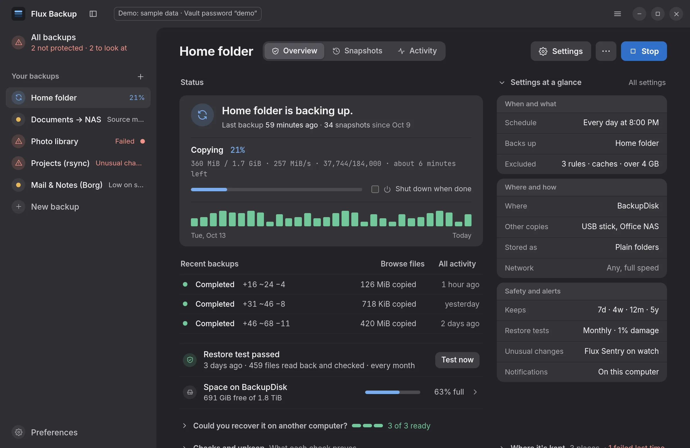
The real app, shown with its demo data.
Flux keeps a complete snapshot of your folders every day or every hour. Each one costs almost nothing, because only what changed is stored. It runs on its own, and any version of any file is a search away.
Specifications
speed · Mirror
0.26s
A new snapshot of 1 GiB in 100,000 files. rsync: 7.73 s.
speed · Vault
0.51s
The same, encrypted and deduplicated. Borg: 8.18 s.
first backup
0.46s
Mirror's first full copy of it. rsync: 4.28 s.
size
864MiB
Vault, for the same data. Borg: 869 MiB.
key
256bit
XChaCha20-Poly1305, behind Argon2id.
kept by default
7·4·12·5
Daily, weekly, monthly and yearly snapshots.
formats
4
Every one readable without Flux.
packages
3
.rpm, .deb and AppImage.
Get Tuesday's file back. Even if it's gone.
Search every snapshot at once, open any version of a file, and see what a restore will do before anything is written.
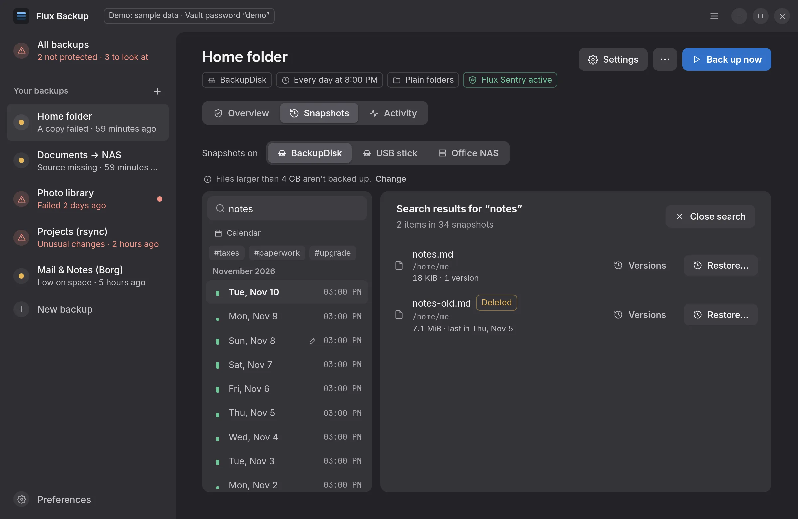
Deleted files too
With the last snapshot that had them.
Every version
Side by side: compare, open or restore any one.
A restore preview
What's added, what's kept aside, what's already identical.
Ransomware? Caught in the act.
Files renamed to .locked by the dozen and a HOW_TO_DECRYPT.txt on the disk: Flux warns you right away and keeps the snapshot from before.
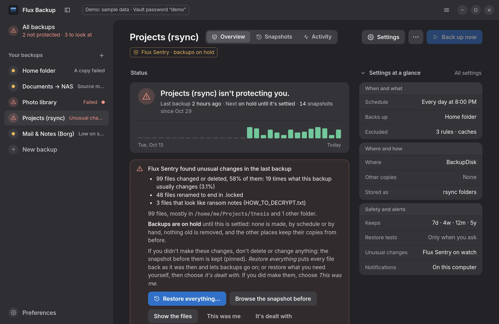
Watched every backup
Far more changes than usual, encrypted-looking files, ransom notes.
The last good snapshot
Kept and pinned, ready to restore from.
Nothing removed
Old snapshots stay until you've looked.
Set it up once. It runs on its own.
Backups run on a schedule with the app closed, catch up after the computer was off, and can wait for mains power or for the drive to be plugged in.
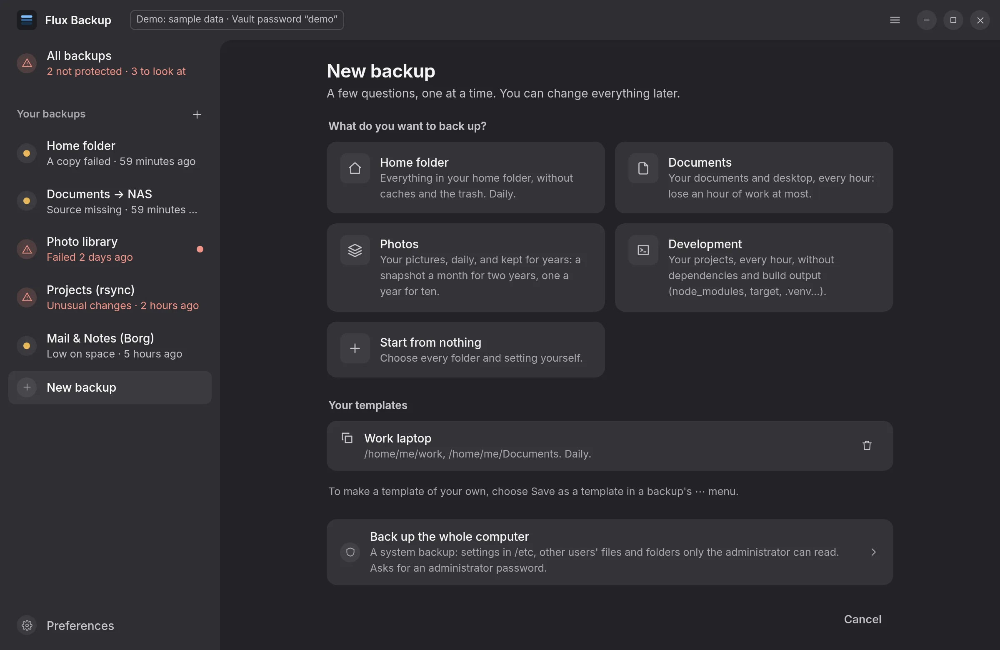
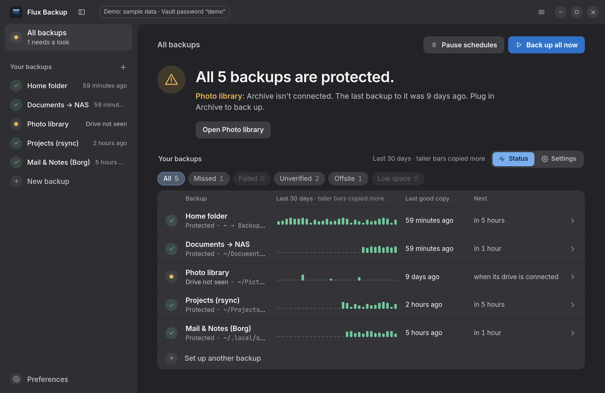
New laptop. Same backups.
Plug in the drive or name the server. Flux finds your backups there, opens an encrypted one with its password, and sets it up again with its settings.
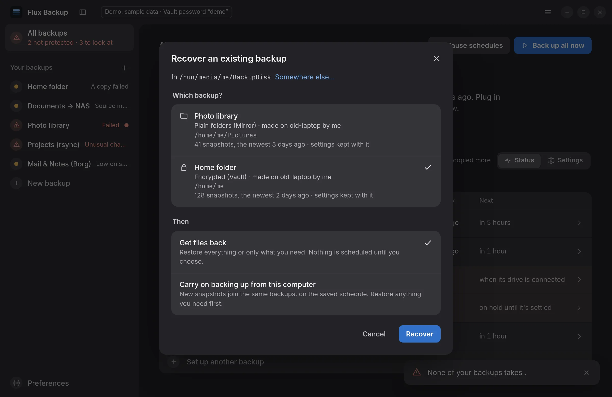
More than one copy
Each backup to several places, one of them kept somewhere else.
Restore tests
On a schedule, so you know a backup reads back before you need it.
Without Flux
flux-vault-recoversits next to every Vault and restores it alone.
Every detail, considered.
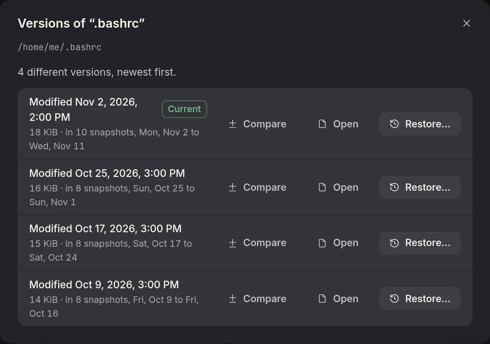
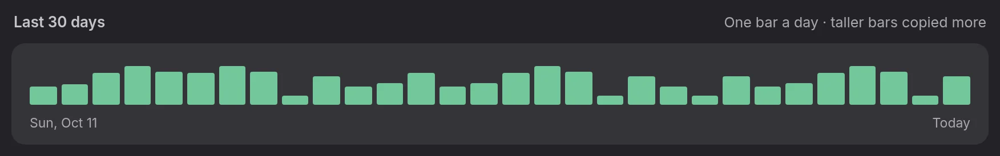
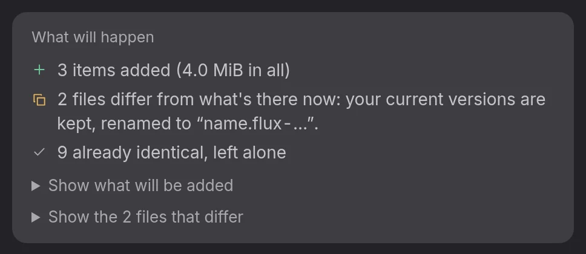
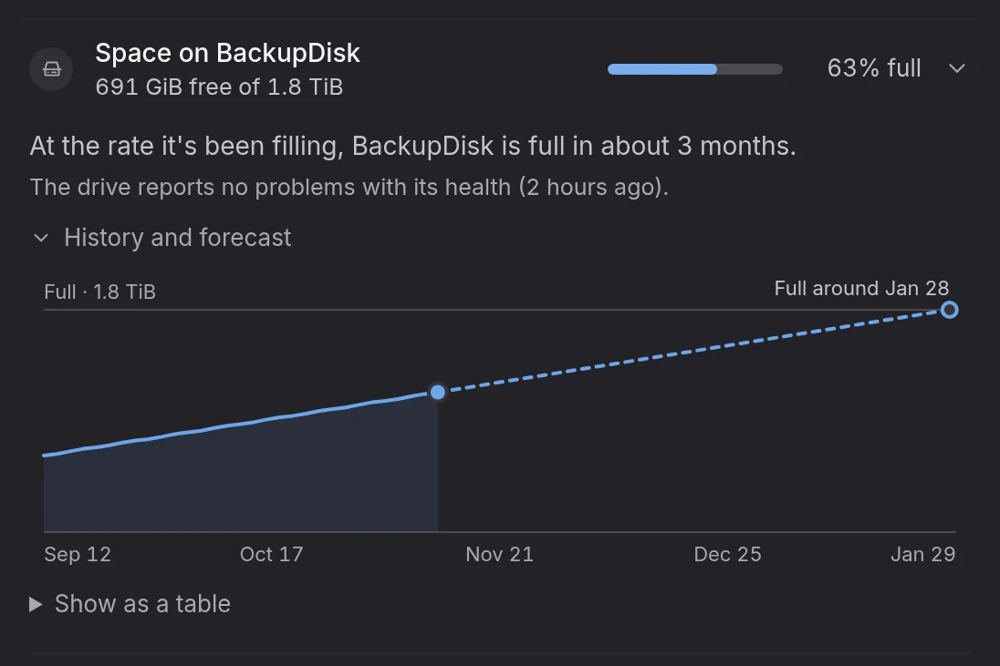
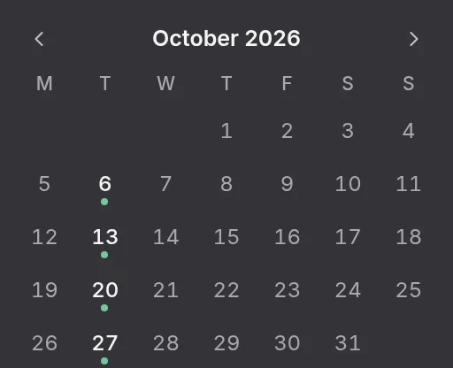
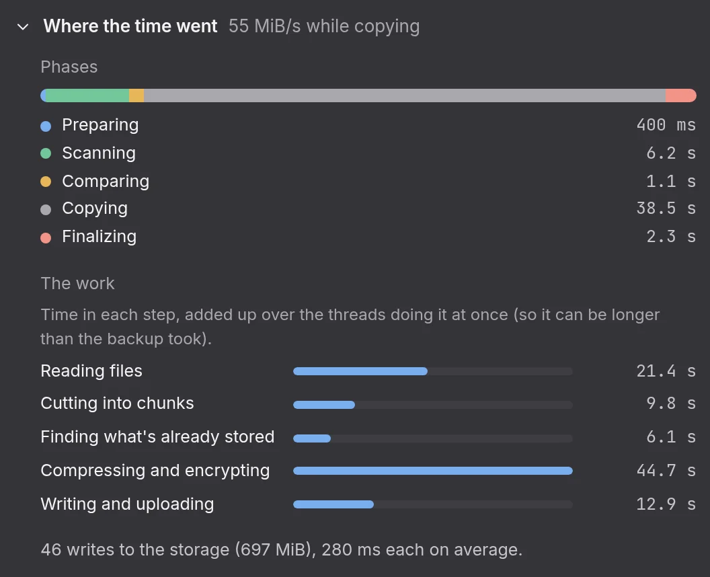
Measured, not promised.
A new snapshot of 1 GiB in 100,000 files after a day of small edits. Flux works on every core and skips what didn't change.
rsync --link-dest7.73 s| Measured | Mirror | rsync | Vault | Borg |
|---|---|---|---|---|
| First full backup | 0.46 s | 4.28 s | 1.73 s | 15.81 s |
| Nothing changed | 0.26 s | 7.67 s | 0.51 s | 8.17 s |
| Size on the drive | – | – | 864 MiB | 869 MiB |
Median of three runs of bench/bench.sh on tmpfs, 16 cores, with rsync 3.5 and Borg 1.4.5; every snapshot checked byte for byte. Much of the gap comes from using every core, so expect less of it on a spinning disk.
Four formats. One command line.
Each backup picks how it's stored, and none of them needs Flux to open. Every format is written down and frozen for 1.x.
flux-vault-recovercp or rsyncborg extract# a snapshot, now
flux backup home
# search every snapshot
flux find home '*.odt' -i
# every version of a file
flux history home ~/notes.md
flux restore home ~/notes.md
# on a new computer
flux recover /run/media/$USER/BackupNew in 1.0.
Version 1.0 is about the day you need your backups: on another computer, without Flux, or years from now.
Get Flux Backup 1.0.
Each package holds the app, the flux command, man pages and shell completions.
flux; system backups need a package.Download
Build it yourself
Rust 1.99 or newer; the app also needs Node.js 26 (LTS) and WebKitGTK 4.1.
packaging/prepare-dist.sh
sudo PREFIX=/usr packaging/install.shOne copy is one copy
Flux checks what it can, but a single drive can still fail or go missing with the laptop. Add a place kept somewhere else, and read the threat model for what Flux does and doesn't protect against.
Flux Backup 1.0
Free software for Linux. Your first backup takes a minute to set up.